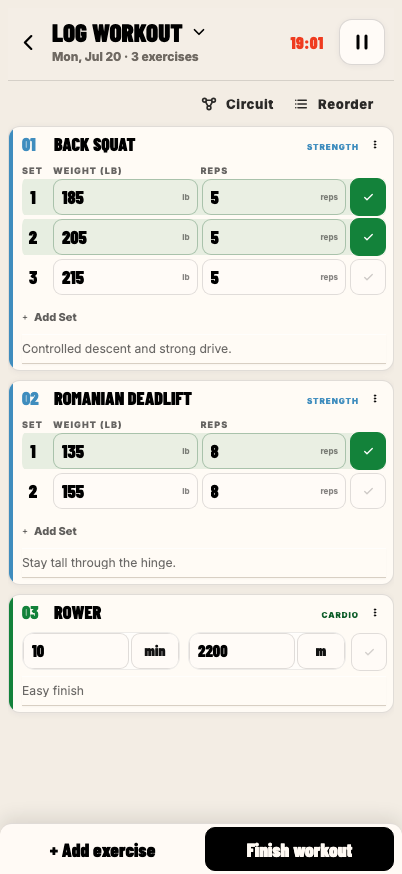
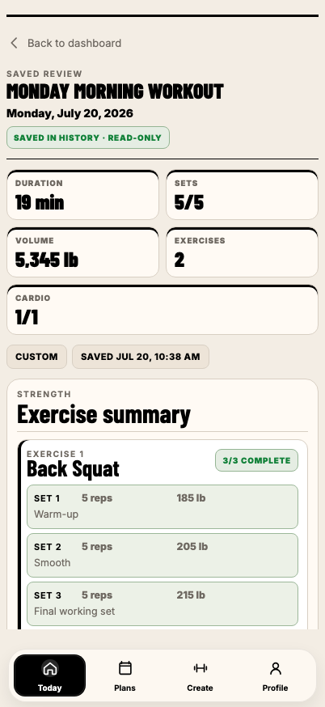
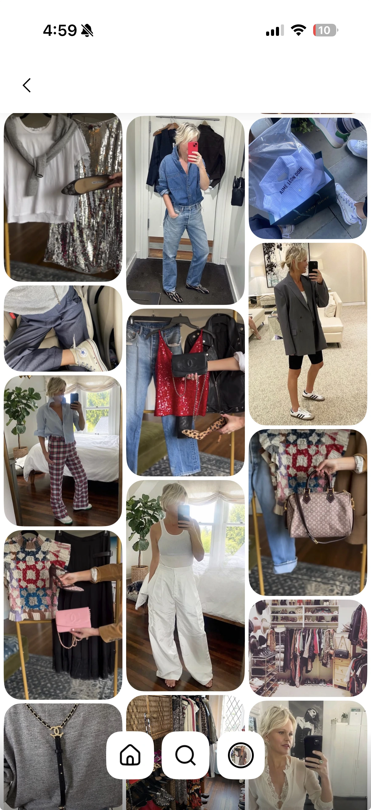
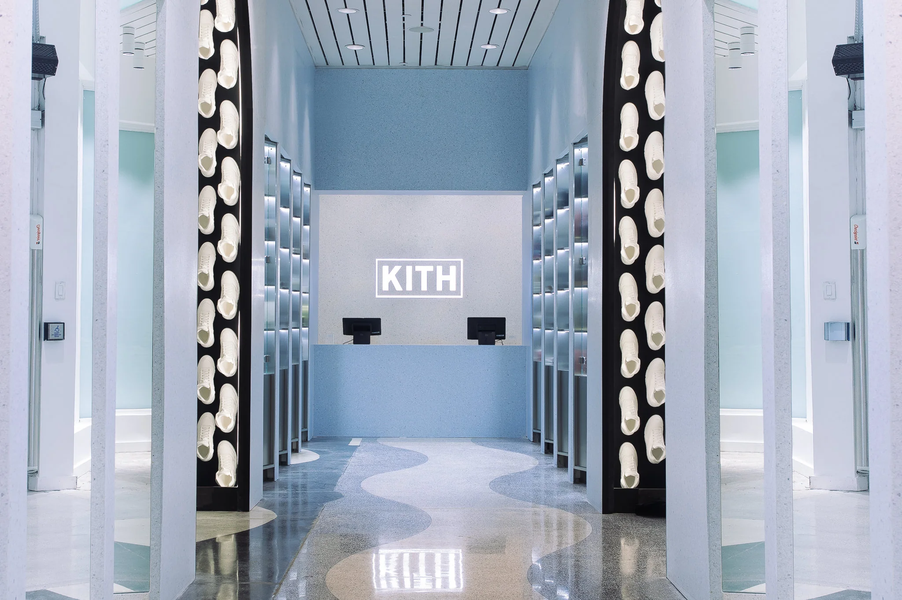

Selected work



Product direction · UX design · Workout app
STRIDE: Designing for workouts that change
A mobile workout planning and logging app designed around real training behavior, continuity, and speed.
View project ↗
Magazine design · Print · Concept
Concrete Runways
A print magazine exploring the intersections of fashion, sport culture, and streetwear, where editorial sophistication meets raw street energy.
View project ↗


Stylist work · Digital strategy
Tiffany Wendel: Digital Growth Strategy
Partnered with stylist Tiffany Wendel to drive growth across Pinterest, LTK, and ShopMy by blending fashion expertise with strategic digital marketing.
View project ↗
Client experience · Fashion retail
Kith: Client Experience & Brand Insight
Customer experience associate at Kith Miami Beach. Observing how a global brand builds culture, connection, and consistency across every touchpoint.
View project ↗
